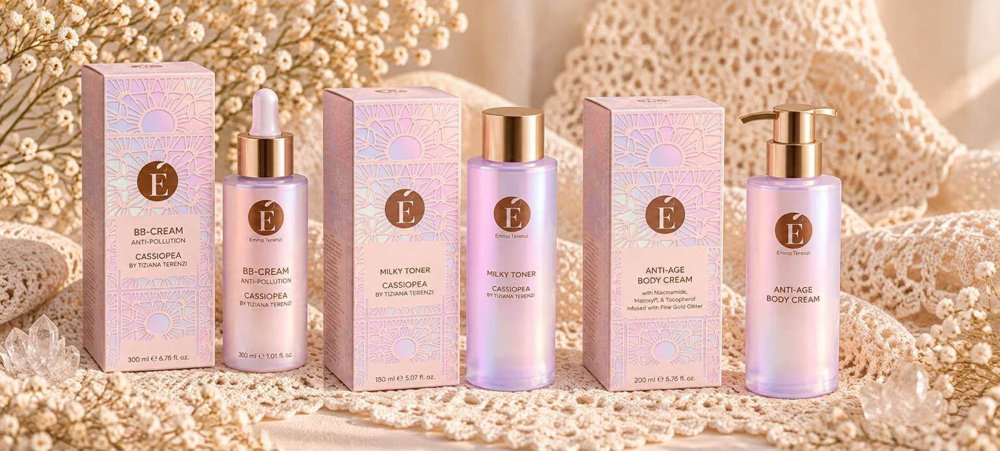

My name is Emma Terenzi, and long before I learned how to formulate a cosmetic product, I grew up surrounded by a world of fragrance, craftsmanship and creation.
I belong to the fourth generation of the Terenzi family, whose story began with my great-great-grandfather and the foundation of Cereria Terenzi. What started as a family craft has evolved across generations, while preserving a deep connection to creativity, raw materials and the art of transforming an idea into something tangible.
Today, that story continues through my father and my aunt, who are still actively involved in the family business. Growing up alongside them meant that fragrance was never simply a finished product to me. It was something I saw being imagined, developed and brought to life. I grew up seeing how much knowledge, curiosity, persistence and emotion can exist behind an object that someone else will eventually hold in their hands.
I am now beginning to find my own place within that story.
Not by simply following what came before me, but by bringing into it my own interests, education and way of creating.
From chemistry to cosmetics
I have always been drawn to two worlds that, at first glance, may seem far apart: science and creativity.
My academic journey began with a Bachelor’s degree in Materials Chemistry, where I learned to understand matter through its structure, interactions and transformations. But it was cosmetics that showed me how chemistry could become something tangible — something you can formulate, touch, experience and ultimately make part of everyday life.
That curiosity led me to pursue a Master’s degree in Cosmetic Industrial Science, where formulation became the point at which everything came together: scientific method, sensory perception, aesthetics and product design.
EMMAT Cosmetics was born from that intersection.
For my Master’s thesis, I wanted to go beyond simply developing a cosmetic formula. I wanted to understand why a formulation works, how apparently similar emulsifying systems can behave in completely different ways, and how those differences can ultimately define the identity of a finished product.
The result was a systematic comparison of three natural emulsifiers, translated into three different formulations: a BB Cream, a Milky Toner and an Anti-Age Body Cream. Each product was not designed first and formulated afterwards; instead, the experimental results determined what each emulsifier was best suited to become.
Natural O/W emulsifiers are increasingly replacing synthetic surfactants, driven by clean-beauty demand and sustainability standards. At the same time, skinification and K-beauty raise the bar for lightness, absorption and multifunctionality. Formulating natural emulsions that stay stable across different oils, actives and pigments remains a real technical challenge.
This thesis compares three natural emulsifiers across seven experimental series, combining physicochemical characterisation (pH, viscosity, centrifuge stability, optical microscopy) with a five-assessor sensory evaluation. The results were then translated into three finished prototypes.
Interfacial-film mechanism. Stable once Xanthan Gum and Cetearyl Alcohol are combined, best at 4%. The lightest, most spreadable texture with the lowest soaping effect, and excellent compatibility with inorganic pigments.
→ BB Cream Anti-Pollution
ii
Alkyl Glucoside
C14-22 Alcohols / C12-20 Alkyl Glucoside
Lamellar liquid-crystal networks that give intrinsic structure. Tolerates oil loads up to 30%, best at 4%. Rich, occlusive texture with the highest shine and residual film. Incompatible with inorganic pigments.
→ Anti-Age Body Cream
iii
Modified Starch
Sodium Starch Octenylsuccinate
Pickering stabilisation, stable at 5% without added stabilisers. High viscosity even at low oil fractions. The fastest absorption, the lowest residue and a distinctive powdery after-feel.
→ Hydrating Milky Toner
03 · Methodology
Seven experimental series
S1 Baseline20% mixed oils, with and without stabilisers
S2 Oil load10%, 20% and 30% oil phase
S3 Single oilsfive emollients tested one by one
S4 Concentrationemulsifier level increased or reduced
Every emulsion was assessed by pH, viscosity, centrifugation and optical microscopy, then scored by a sensory panel on a 0–10 scale. A three-month study followed stability on storage.
04 · The Products
One product for each emulsifier
EMMAT Cosmetics × Cassiopea by Tiziana Terenzi. Tap a product to open it.

05 · Conclusions
From screening to finished product
Across the seven series each emulsifier showed a distinct and consistent identity: interfacial-film mechanics for the ester blend, lamellar liquid-crystal co-assembly for the alkyl glucoside and Pickering-type adsorption for the modified starch. Each product was assigned on evidence: pigment compatibility, oil-phase tolerance and sensory profile.
Next steps: longer and accelerated stability studies (6–12 months, 40 °C), secondary thickeners to limit the viscosity loss of the starch system, and consumer and clinical testing of the three prototypes.